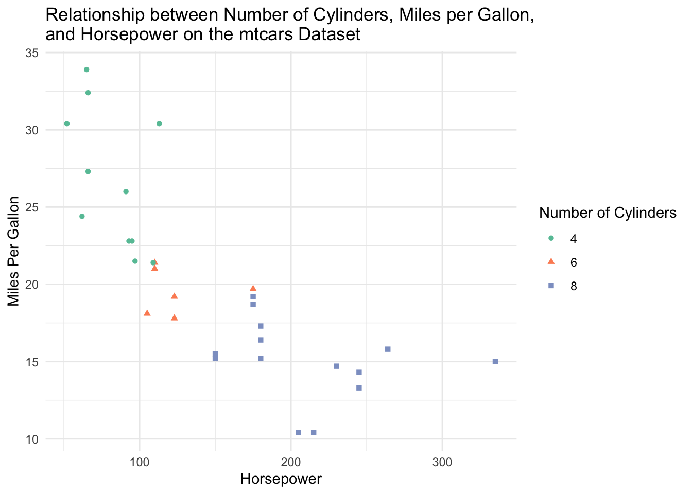
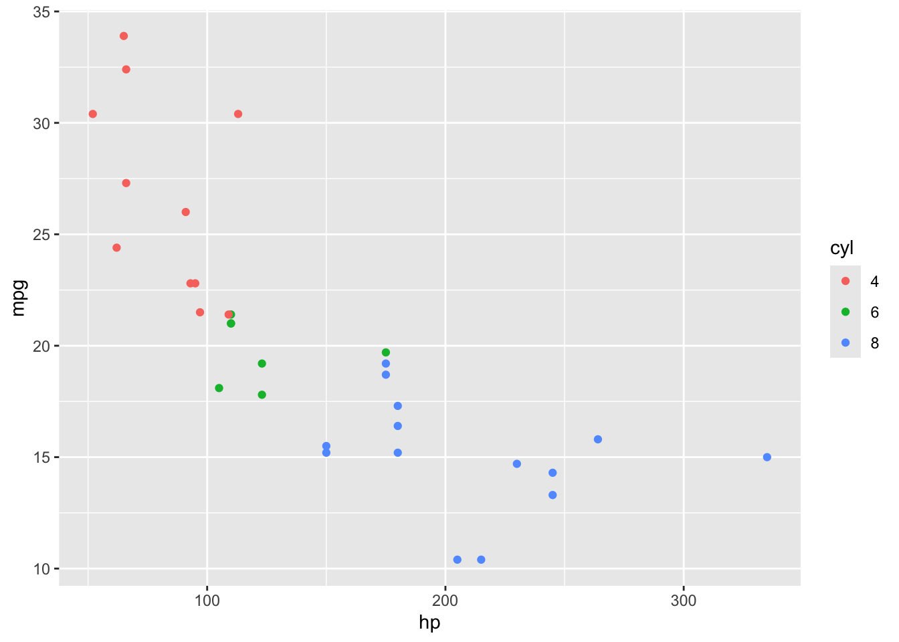
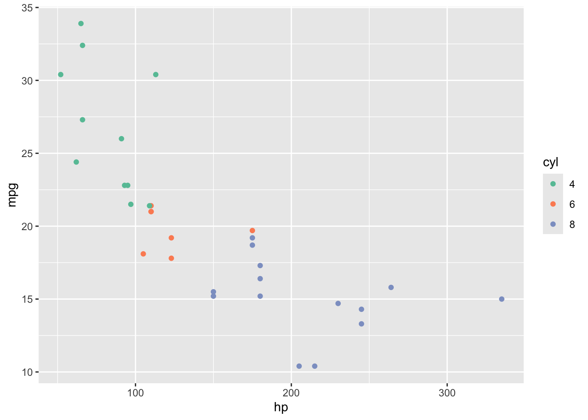
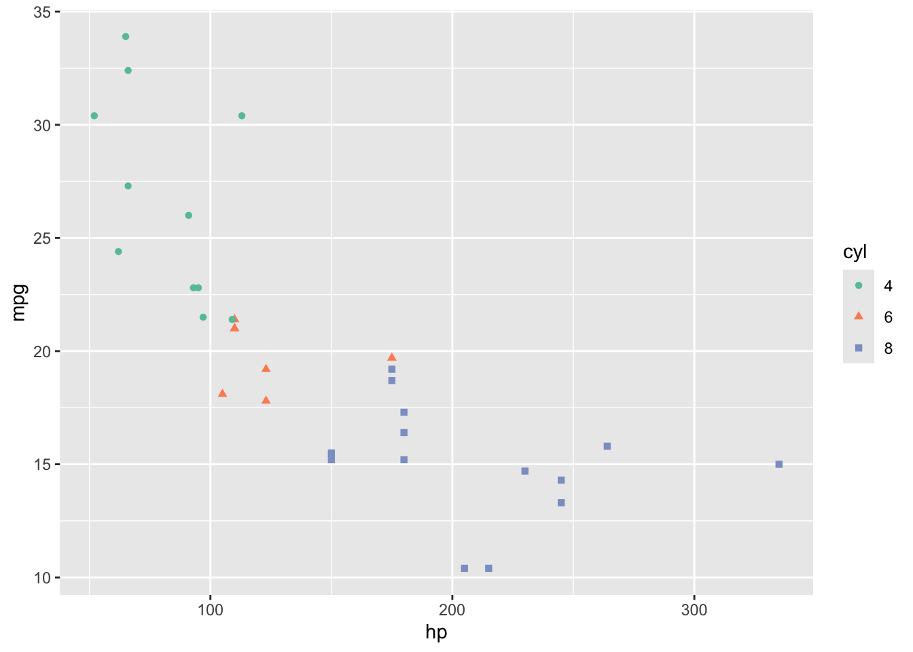
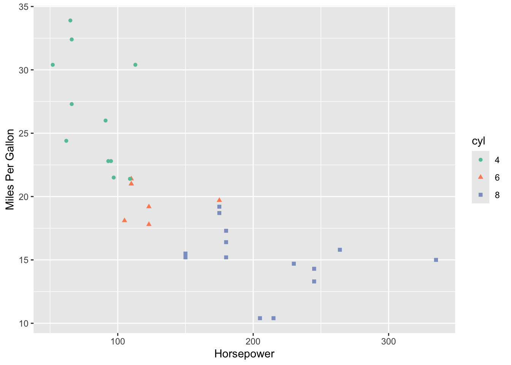
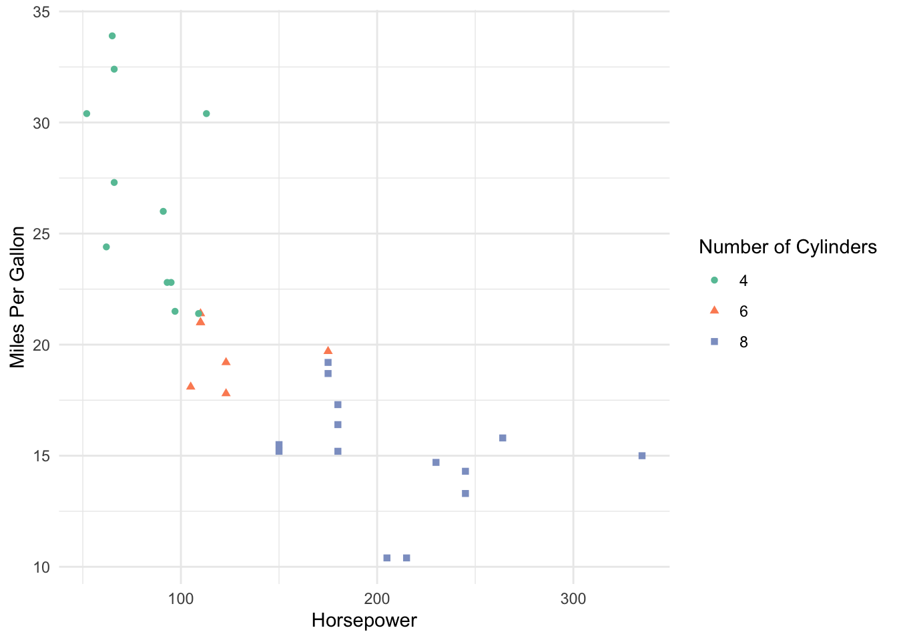

library(dplyr)
library(knitr)
library(ggplot2)
library(RColorBrewer)Lecture 4: Data Visualization
September 23, 2025
Learning Objectives
From this topic, students are anticipated to be able to:
Identify the seven components of the grammar of graphics underlying
ggplot2.Produce plots with
ggplot2by implementing the components of the grammar of graphics.Customize the look of
ggplot2graphs.Choose an appropriate plot type for analysis, based on an understanding of what makes a graph effective.
Lecture Video
We will be using the following packages for this lecture:
Motivating Example
Tables are a convenient way to display information. Oftentimes, we are tempted to include tables in papers and presentations to emphasize relationships between variables in a data set as tables are relatively simple to create.
Let’s look at a table that one could create to show the relationship between the number of cylinders, miles per gallon, and horsepower in the mtcars data set:
| Number of Cylinders | Miles per Gallon | Horsepower |
|---|---|---|
| 4 | 21.4 | 109 |
| 21.5 | 97 | |
| 22.8 | 93 | |
| 22.8 | 95 | |
| 24.4 | 62 | |
| 26.0 | 91 | |
| 27.3 | 66 | |
| 30.4 | 52 | |
| 30.4 | 113 | |
| 32.4 | 66 | |
| 33.9 | 65 | |
| 6 | 17.8 | 123 |
| 18.1 | 105 | |
| 19.2 | 123 | |
| 19.7 | 175 | |
| 21.0 | 110 | |
| 21.0 | 110 | |
| 21.4 | 110 | |
| 8 | 10.4 | 205 |
| 10.4 | 215 | |
| 13.3 | 245 | |
| 14.3 | 245 | |
| 14.7 | 230 | |
| 15.0 | 335 | |
| 15.2 | 180 | |
| 15.2 | 150 | |
| 15.5 | 150 | |
| 15.8 | 264 | |
| 16.4 | 180 | |
| 17.3 | 180 | |
| 18.7 | 175 | |
| 19.2 | 175 |
Was it easy to figure out the relationship I was trying to convey? I’m sure you would eventually be able to figure it out, but I’d bet it took some time. What about now?:

We can clearly see that cars with higher horsepower tend to be less fuel efficient (have lower miles per gallon). Cars with higher horsepower also tend to have a higher number of cylinders. That was a lot easier to deduce than when we were reading numbers off of a large table. We will show how to build this exact plot in this lecture!
Effective Data Visualization
Plots and other forms of data visualization are powerful tools for conveying complex relationships. While tables can be useful, data visualizations are often preferred to aid with identify patterns and relationships and emphasizing important findings in a research projects. This is especially true for presentations, where the audience may not have time to digest a large table of numbers. Jenny Bryan’s Challenger Example (https://speakerdeck.com/jennybc/ggplot2-tutorial) is a great example of why we may want to visualize data.
Now the question is, what visualization should you use to convey an idea? Well, you need to first formulate the question you want the data visualization to answer. That is, you need to figure out what you want to convey before you start visualizing the data. From UBC’s A First Introduction to Data Science [1] book:
“A good visualization will clearly answer your question without distraction; a great visualization will suggest even what the question was itself without additional explanation. Imagine your visualization as part of a poster presentation for a project; even if you aren’t standing at the poster explaining things, an effective visualization will convey your message to the audience.”
We need to convey the message using a data visualization while removing as much unnecessary information as possible. Below is a direct quote from the A First Introduction to Data Science [1] containing their suggestions for effective data visualizations:
“Convey the message”
Make sure the visualization answers the question you have asked most simply and plainly as possible.
Use legends and labels so that your visualization is understandable without reading the surrounding text.
Ensure the text, symbols, lines, etc., on your visualization are big enough to be easily read.
Ensure the data are clearly visible; don’t hide the shape/distribution of the data behind other objects (e.g., a bar).
Make sure to use color schemes that are understandable by those with colorblindness (a surprisingly large fraction of the overall population—from about 1% to 10%, depending on sex and ancestry [2]). For example, ColorBrewer and the
RColorBrewerR package [3] provide the ability to pick such color schemes, and you can check your visualizations after you have created them by uploading to online tools such as a color blindness simulator.Redundancy can be helpful; sometimes conveying the same message in multiple ways reinforces it for the audience.
“Minimize noise”
Use colors sparingly. Too many different colors can be distracting, create false patterns, and detract from the message.
Be wary of overplotting. Overplotting is when marks that represent the data overlap, and is problematic as it prevents you from seeing how many data points are represented in areas of the visualization where this occurs. If your plot has too many dots or lines and starts to look like a mess, you need to do something different.
Only make the plot area (where the dots, lines, bars are) as big as needed. Simple plots can be made small.
Don’t adjust the axes to zoom in on small differences. If the difference is small, show that it’s small!
ggplot2 and the Grammar of Graphics
If you’ve learned about data visualization in R before, you’ve likely produced plots using “base R” methods (for example, the boxplot() function in R. It is a simple framework for making plots and is often “enough” for producing basic plots. In this lecture, we are going to dive into ggplot2, a package R users often use to make more sophisticated plots! If you’ve never used R to plot before, don’t worry. We aren’t assuming you have any experience with either method of plotting in R.
We will be utilising the ggplot2 and tidyverse packages throughout this lecture. To load them:
# install.packages("tidyverse") #uncomment if not already installed
# install.packages("ggplot2") #uncomment if not already installed
library(tidyverse)
library(ggplot2)ggplot2 is based on the grammar of graphics, which is a systematic approach for describing different components or aspects of a graph. It involves seven components (required components are indicated with the *):
Data*
- the data you’re feeding into the plot, perhaps a tibble or dataframe
Aesthetic mappings*
- a specification of how you will connect variables (for example, horizontal or vertical positioning, grouping, size, colour, shape)
Geometric objects*
- a specification of what the object will be drawn as (for example, a scatter plot, line, bar chart)
Scales
- a specification of how a variable is mapped to its aesthetic
Statistical transformations
- a specification of whether and how the data are combined or transformed. For example, is a bar chart plotting the values or a relative frequency?
Coordinate system
- a specification of how the position aesthetics (x and y) are depicted in the plot. We typically use cartesian coordinates, though polar coordinates are also possible.
Facet
- a specification of data variables that partition the data into smaller “sub plots” or panels
It’s okay if you don’t quite understand all of these components yet. We will walk through examples of commonly used plots and discuss which components are necessary!
Example 1: Scatterplot on mtcars
Let’s say you’d like to see if there is a relationship between miles per gallon and horsepower of cars in the mtcars data set. As both of these variables are numeric, we could build a scatterplot.
The ggplot() function takes two arguments: data (the data frame or tibble containing your data that you’d like to plot) and mapping (aesthetic mappings applied to the entire plot. We use the aes() function inside of this argument.).
Let’s start building the scatterplot! Let’s plot mpg (miles per gallon) on the x axis and hp on the y axis by piping the dataset into the ggplot function:
mtcars %>%
ggplot(aes(x = hp, y = mpg))
Notice that we haven’t actually plotted anything! ggplot doesn’t know what type of plot we want to draw, only that we want mpg on the x axis and hp on the y axis from the mtcars data we provided. To tell ggplot that we want a scatterplot, we are going to add a layer to the plot using the + at the end of the previous line. geom_point() is the geometric object we’d like to add (i.e., a scatterplot):
mtcars %>%
ggplot(aes(x = hp, y = mpg)) +
geom_point()
We now have created a scatterplot! It’s fine, but we can elevate this. Let’s colour the points by the number of cylinders!
mtcars %>%
ggplot(aes(x = hp, y = mpg, color = cyl)) +
geom_point()
Hmmm. That’s not quite right! There are only 3 types of cylinders in our data set! (Don’t believe me? Try running unique(mtcars$cyl)). Because cyl is written as a number, R is probably going to read it as a numeric value. However, we only have three possible categories for the number of cylinders, so we first should tell R to treat this as a categorical variable! We can do this with mutate, where we overwrite the cyl variable as a factor. Then, we use color = cyl in the aes() function to tell ggplot to colour by this category!
mtcars %>%
mutate(cyl = as.factor(cyl)) %>%
ggplot(aes(x = hp, y = mpg, color = cyl)) +
geom_point()
Cool! But… this isn’t super colourblind-friendly. Let’s turn to the RColorBrewer package to select a friendlier colour scheme. The colour pallet “Set2” is more colourblind-friendly:
mtcars %>%
mutate(cyl = as.factor(cyl)) %>%
ggplot(aes(x = hp, y = mpg, color = cyl)) +
geom_point() +
scale_color_brewer(palette = "Set2") 
To be even more accessible, let’s change the shape of the points by cylinder type by adding shape = cyl to the aes()!
mtcars %>%
mutate(cyl = as.factor(cyl)) %>%
ggplot(aes(x = hp, y = mpg, color = cyl, shape = cyl)) +
geom_point() +
scale_color_brewer(palette = "Set2") 
Now, let’s add better labels to our X and Y axes:
mtcars %>%
mutate(cyl = as.factor(cyl)) %>%
ggplot(aes(x = hp, y = mpg, color = cyl, shape = cyl)) +
geom_point() +
scale_color_brewer(palette = "Set2") +
xlab("Horsepower") +
ylab("Miles Per Gallon") 
We can also change the title of our legend. We’ll have to specify the title twice as we’ve grouped by colour and shape:
mtcars %>%
mutate(cyl = as.factor(cyl)) %>%
ggplot(aes(x = hp, y = mpg, color = cyl, shape = cyl)) +
geom_point() +
scale_color_brewer(palette = "Set2") +
xlab("Horsepower") +
ylab("Miles Per Gallon") +
labs(color = "Number of Cylinders", shape = "Number of Cylinders")
The grey background is still a bit distracting, so we could remove it by giving out ggplot a more minimal theme:
mtcars %>%
mutate(cyl = as.factor(cyl)) %>%
ggplot(aes(x = hp, y = mpg, color = cyl, shape = cyl)) +
geom_point() +
scale_color_brewer(palette = "Set2") +
xlab("Horsepower") +
ylab("Miles Per Gallon") +
labs(color = "Number of Cylinders", shape = "Number of Cylinders") +
theme_minimal()And finally, let’s add a descriptive title!
mtcars %>%
mutate(cyl = as.factor(cyl)) %>%
ggplot(aes(x = hp, y = mpg, color = cyl, shape = cyl)) +
geom_point() +
scale_color_brewer(palette = "Set2") +
xlab("Horsepower") +
ylab("Miles Per Gallon") +
labs(color = "Number of Cylinders", shape = "Number of Cylinders") +
theme_minimal() +
ggtitle("Relationship between Number of Cylinders, Miles per Gallon, \nand Horsepower on the mtcars Dataset")
The \n in the title is a special character that allows the line to break and fit on this size of plot.
Now, this is a nice visualization! We can clearly see that cars with higher horsepower tend to be less fuel efficient (have lower miles per gallon). Cars with higher horsepower also tend to have a higher number of cylinders.
Tip
Names of axes should have quotations “” around them.
The order of the layers doesn’t matter after the geom_layer() layer.
Common Types of Plots
geom_point(): scatterplotgeom_line(): line plotgeom_bar(): bar chartgeom_histogram(): histogramgeom_boxplot(): box plotgeom_smooth(): adds a smooth trend line (various methods)
Advice for ggplot
Google is absolutely your friend when building ggplots. I don’t think I’ve ever made a plot without googling how to do it. ggplot is extremely powerful, flexible, and a bit scary to learn! If you need to build a plot, search it! Need to plot two histograms, separated by groups (say, gender), side by side? I’d google: “ggplot histogram grouped by variable”. This brings me to this blog post by R Charts that has a TON of different side by side histograms with code! ggplot is very much a “learn by doing” skill.
Worksheet A3
It’s time to try
ggplot2yourself! Spend time working through Worksheet A3.Finished attempting all of the questions? Then do the optional R4DS Data Visualization reading, and maybe even do some of the exercises for extra practice.
Post any questions you have on the Slack!
Next class: FEV Case Study
We will get a flavour for how you might use ggplot2 in the wild and get in even more practice by working through a continuation of our FEV case study from last week.
By yourself and in small groups, work through the exercises in the case study. We will also discuss instructor answers to each exercise.
Additional Resources
Video lectures for this topic (ignore the episode numbering):
Video Lecture: ggplot2 Part 1: Introduction to Plotting
Video Lecture: ggplot2 Part 2: Plotting for Exploratory Data Analysis
The R4DS Data Visualization chapter (provides an excellent overview of plotting in ggplot2 and the grammar of graphics. We especially recommend sections 3.1 to 3.4.)
Hadley Wickham’s ggplot2 book (a well-organized, approachable, and comprehensive coverage of ggplot2.)
Cheatsheets:
The ggplot2 cheatsheet (Also available through RStudio: “Help” -> “Cheatsheets” -> “Data visualization with ggplot2”).
Craig Hutton’s comprehensive blog post adopting a similar structure to our course notes, but with more explorations.
Resources about producing effective visualizations:
Fundamentals of Data Visualization by Claus Wilke is an excellent guide to designing effective visuals. If you only look at one resource, this should be it.
Visualization Analysis and Design by Tamara Munzner is a gold-standard book for the theory of designing plots with a focus on human perception.
Bite-sized resources to help you produce effective visualizations:
The “do’s and don’ts of effective graphics” in Jenny Bryan’s STAT 545 book provides some rules of thumb for producing effective visuals.
Vincenzo’s “Communicating data” slides provide some rules of thumb.
Callingbull.org’s entry on visualizations, by Carl T. Bergstrom and Jevin West, goes over several examples of improving ineffective visuals.
References
1.
Timbers T, Campbell T, Lee M (2022) Data science: A first introduction. Chapman; Hall/CRC
2.
Deeb S (2005) The molecular basis of variation in human color vision. Clinical genetics 67(5):369–377
3.
Neuwirth E et al (2014) RColorBrewer: Colorbrewer palettes